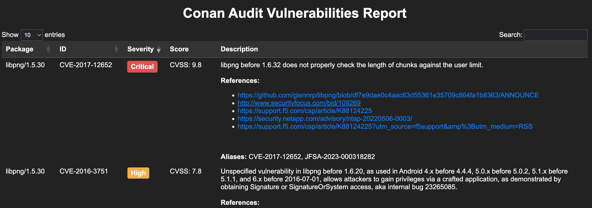

Checking package vulnerabilities
Warning
This feature is experimental and subject to breaking changes. See the Conan stability section for more information.
The conan audit command (introduced in Conan 2.14.0) is used to check for known
vulnerabilities in your Conan packages.
By default, Conan provides access to a ConanCenter provider, which is a public provider that checks for vulnerabilities in ConanCenter packages, which uses JFrog Advanced Security to scan packages.
Requesting a token
To use the command, you will first need to register for the free service at https://audit.conan.io/register. After registering, you will receive an email with an activation link. Clicking this link will take you to a page where your personal access token is displayed.
Once you have your token, you can authenticate the conancenter provider with
it:
$ conan audit provider auth conancenter --token=<your_token>
Note
Using --token in the command line may expose your token in the shell history. To
prevent this, set it as an environment variable named after the provider in uppercase.
For example, for conancenter, use:
CONAN_AUDIT_PROVIDER_TOKEN_CONANCENTER=<token>.
Scanning packages
Once you have authenticated, you can check for vulnerabilities in your packages with the
conan audit scan and conan audit list commands.
conan audit scanwill check for the vulnerabilities of the given package(s) and their dependencies.
conan audit listwill list the vulnerabilities of the given package(s) without checking their dependencies.
$ conan audit list openssl/1.1.1w
Requesting vulnerability info for: openssl/1.1.1w
******************
* openssl/1.1.1w *
******************
2 vulnerabilities found:
- CVE-2023-5678 (Severity: Medium, CVSS: 5.3)
Issue summary: Generating excessively long X9.42 DH keys or checking
excessively long X9.42 DH keys or parameters may be very slow. Impact summary:
Applications that use the functions DH_generate_key() to generate an X9.42 DH
key may exper...
url: https://git.openssl.org/gitweb/?p=openssl.git;a=commitdiff;h=db925ae2e65d0d925adef429afc37f75bd1c2017
- CVE-2024-0727 (Severity: Medium, CVSS: 5.5)
Issue summary: Processing a maliciously formatted PKCS12 file may lead OpenSSL
to crash leading to a potential Denial of Service attack Impact summary:
Applications loading files in the PKCS12 format from untrusted sources might
terminate ...
url: https://github.com/alexcrichton/openssl-src-rs/commit/add20f73b6b42be7451af2e1044d4e0e778992b2
Total vulnerabilities found: 2
Summary:
- openssl/1.1.1w 2 vulnerabilities found
Vulnerability information provided by JFrog. Please check https://jfrog.com/advanced-security/ for more information.
You can send questions and report issues about the returned vulnerabilities to conan-research@jfrog.com.
To scan the entire dependency graph of a package, the simplest way is using the conan audit scan command
and providing a path to your conanfile, just as you would do with other Conan commands such as conan install.
For example, for a project with a conanfile.txt:
[requires]
libpng/1.5.30
openssl/1.1.1w
You can run:
$ conan audit scan .
Note that all of these commands support various output formats, such as JSON and HTML.
$ conan audit scan . -f=html > report.html
This generates an HTML report with the vulnerabilities found in the given package(s) and their dependencies, which will look something like:
{kind=link}

The scan also has the threshold option --severity-level, which allows you to set a minimum severity level for the vulnerabilities.
In case the threshold value is surpassed by any of the vulnerabilities found, the command will return a non-zero exit code.
By default, it’s set to 9.0 (Critical), but you can set it to a lower value to include lower severity vulnerabilities in the report.
To disable the threshold, set it to 100.0.
$ conan audit scan . --severity-level=5.0
...
The package openssl/1.1.1w has a CVSS score 5.3 and exceeded the threshold severity level 5.0.
Adding private providers
You can add your own private providers to the list of providers used by the conan audit subcommands.
For now, only JFrog Advanced Security providers are supported.
Note
To use these private providers, your Artifactory license should include a subscription to JFrog Curation
To add a provider, the recommended way is to first create a specific user in Artifactory to use as the read-only user, which can be given no extra permissions. Then, after creating an access token for the user, you can add the provider with the following command:
$ conan audit provider add myprovider --type=private --url=https://your.artifactory.url --token=<your_token>
Note
Instead of using the --token argument in the command line, which may expose your
token in the shell history, you can authenticate with the provider using an environment
variable. Set the CONAN_AUDIT_PROVIDER_TOKEN_<PROVIDER_NAME> environment variable
with the token value, replacing <PROVIDER_NAME> with the provider name in uppercase
and using underscores (_) instead of hyphens (-).
For example, for myprovider, use: CONAN_AUDIT_PROVIDER_TOKEN_MYPROVIDER=<token>.
Note the --type=private argument, which specifies that the provider is a private provider, and that the supplied URL
should be the base URL of the Artifactory instance.
You can now use the provider with the conan audit scan and conan audit list
commands without any limitation on the number of requests, by specifying the provider
name using the -p / --provider argument.
$ conan audit scan . -p=myprovider
See also
For detailed reference documentation on all
conan auditsubcommands and their options, consult the conan audit command reference.Read more in the dedicated blog post.
Please check the conan audit command reference for other security related features.
Check out our security conference in using std::cpp 2025 for a deeper insight in package vulnerabilities.